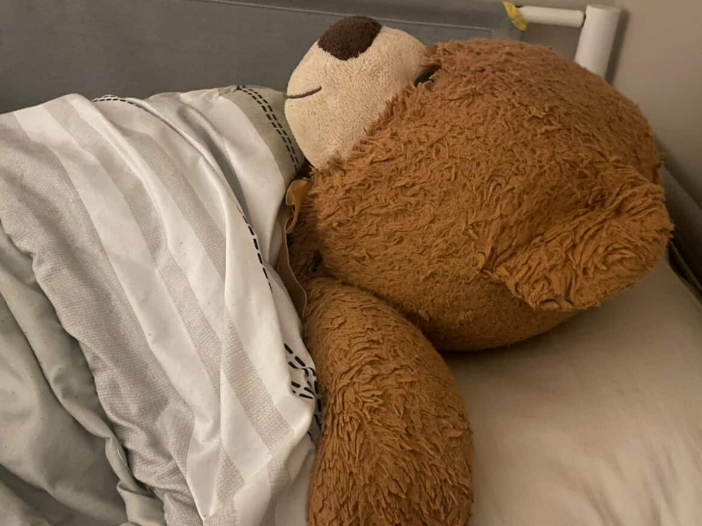

It's not a project by me without some sappy faux-existential garbage.
This is the last time in the lives of most people reading this that we will see a day like this.
The next time that a square day like this will occur is 1/1/2116, a date much past what I will see.
I had no reason to make this website. In fact everyone else on earth is living the same day as me and this is the last time in their lives that they will see a day like this too. Yet most people don't even know about it, let alone care to fork a website they made 4 months prior about it.
I've always been an incredibly sentimental person. I still sleep with the same plush bear that I did when I was 7.
That sentimentality extends to everything in my life, even a silly math quirk on a day I was alive for.
I find it really hard to figure out why I have such a complusion for things like this.
When I realized the date today, I had the compulsion to immediatly drop what I was doing and make this website.
Knowing that this would be the last time I would see something like this scared me into wanting to savour and commemorate it.
Maybe it's just my generation's addiction to FOMO
Maybe I'm just afraid of the idea of things never being the same again, or experiencing something for the last time.
Or maybe I'm just getting older and need to grow up.
The part that I find intresting though is that it doesn't extend to more important days.
I think it's a very human behaviour to understand the width of something, but still be able to ignore it
"Oh I know how bad global warming is but so what if I want to take a 40 minute warm bath with the water running the whole time?" -Me, like a lot
Every day is a day I will never be able to get back. Every hour I spend doing nothing (or making a website that works every hundred years) is an hour less of my life left to expend.
One of these days will be the last time my father calls me. Every time I screen his call is one less time I interact with him before the end.
One of these days I will hangout with all of my childhood friends, and my childhood best friend for the last time. I won't even know it.
But it never registers like that to me. So I take every day for granted, and prefer to make a grand gesture to commemorate a math quirk for a day I was alive for.
Maybe I'm just afraid of change.